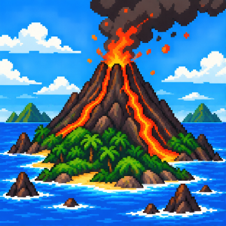
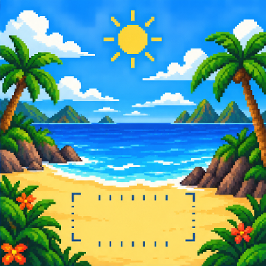
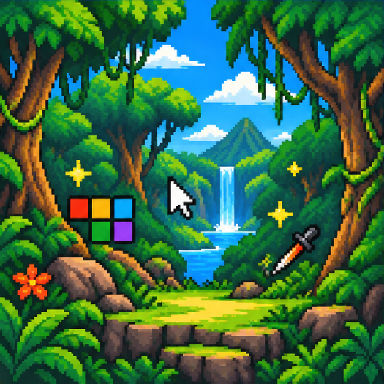
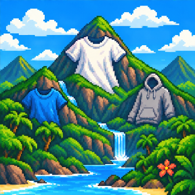

プリント火山島
シルクスクリーンとDTFの違いを、枚数・色・用途で比較。
LAND ▶

枚数・ウェア・プリント位置を選ぶだけ。未定の項目があっても相談できます。
WORLD 1-1
ISLAND MAP

シルクスクリーンとDTFの違いを、枚数・色・用途で比較。
LAND ▶
胸・背中・袖の見え方と適正サイズ。
LAND ▶
CanvaやAI画像をプリントデータにするコツ。
LAND ▶
定番Tシャツとドライ素材の違い。
LAND ▶PRINT GEAR GALLERY
NEW MISSIONS
難しい言葉は使わず、初心者の私にも分かるように質問していきます！